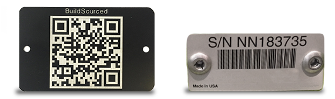
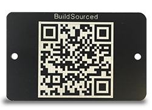
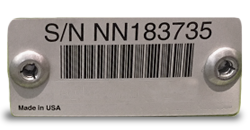

This BuildSourced app quickly reads and interprets optical bar codes. You can scan various format barcodes, and immediately connect with related info. It is particularly intended for scanning heavy-duty barcodes on outdoor equipment.
This app will scan and de-code QR Codes (sometimes called 2D Barcodes) and UPC codes (sometimes called 1D Barcodes). reads and interprets optical bar codes. Here are examples of each:

A QR Code (which means "Quick Response" Code), has data encoded into a square black and white box. To reveal the coded information, you need a scanner and decoder, such as this BuildSourced app.
A UPC Code is similar to the QR, except that it is a single line of bars instead of a grid. This means that it contains less data than a QR code. Similar to QR, it has data encoded and you need a scanner and decoder, such as this BuildSourced app.
It's real simple. Simply touch the "Scan Now" button on the menu at the bottom of your screen. Point your camera at the barcode (about 4"-6" away is good). The app will do the rest, and you'll hear a beep to know it worked.
It's easy. But a few pointers" Aim straight onto the barcode, instead of from the side. And be sure your phone camera is aimed on the barcode. Your phone screen will show an image of the barcode, if it's fuzzy, they try moving back just a few inches.
When you scan, the app will de-code the QR or UPC code. Typically the data stored in the QR or UPC code is a web address, so the BuildSourced app will automatically bring you to that website, right on your phone.
Yes. This app will not collect or store any of your information. Instead, it directly gets you to the website that is coded into a QR or UPC code.
When you first set it up, the app will prompt you for access to the device's camera'. You will be asked for:
Please contact us at support@buildsourced.com. We'll be happy to help you.